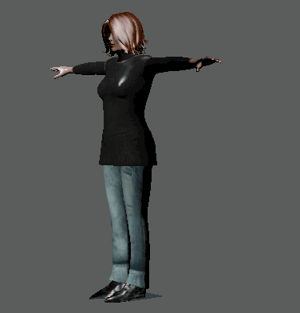
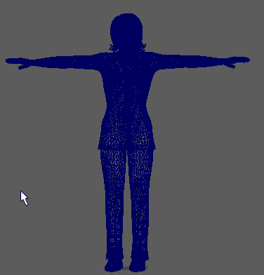
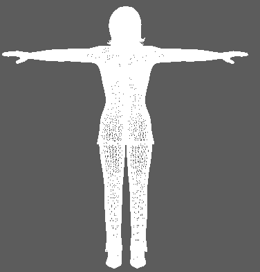
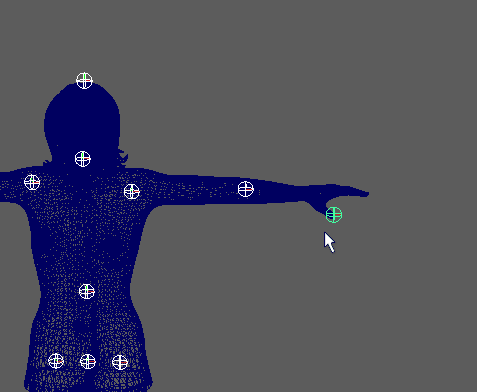

使用“快速装备”(Quick Rig)工具，可以快速为标准角色网格创建角色装备。使用此工具创建角色装备的方法有以下两种：通过“一键式”(One-Click)选项自动创建，建议针对标准角色网格使用此方法；或者，通过“分步”(Step-by-Step)选项创建，这种方法有助于控制自动装备功能。有关“分步”(Step-by-Step)设置的描述，请参见快速装备工具。
通过“一键式”(One-Click)选项创建自动角色装备
“快速装备”工具用于快速将角色装备添加到空网格。单击“自动装备！”(Auto-Rig!)时，Maya 将分析网格以创建角色装备。这一在场景后台执行的装备流程分为多个步骤。若要查看在“一键式”(One-Click)过程中进行求值的内容，请参考下文中的“通过一键式方法创建角色装备”部分；或者，有关设置的描述，请参见快速装备工具。
自动为标准角色网格创建装备
- 从空角色网格开始。

- 从“装备”(Rigging)菜单集中选择(Skeleton > Quick Rig)。将打开快速装备工具。此外，您也可以从 HumanIK 窗口的开始(Start)窗格或“装备”(Rigging)工具架中选择“快速装备”(Quick Rig)。
- 选择“一键式”(One-Click)选项。
- 选择网格。

- 单击“自动装备！”(Auto-Rig!). 此时将创建骨架，然后是 HumanIK 控制装备。随后，网格将蒙皮到骨架。

网格现在可以用于设置动画。
通过一键式方法创建角色装备
选择“分步”(Step-by-Step)选项继续执行上述快速装备步骤中自动生成装备的相同阶段，但会分步进行。此方法将引导您完成该过程，并允许调整快速装备的某些默认设置，使您能够对自动装备功能进行更多控制。
有关“分步”(Step-by-Step)设置的描述，请参见快速装备工具。
在快速装备工具中使用分步方法为角色网格创建装备
- 从“装备”(Rigging)菜单集中选择(Skeleton > Quick Rig)。
- 选择“分步”(Step by Step)选项。
- 展开“1) 几何体”(1) Geometry)以选择用于装备的网格，然后单击“选择所有网格”(Select All Meshes)
 以查找场景中的所有网格。
注： 某些网格附带辅助网格，例如，眼睛、头发、附件等。为了确保这些网格也被选中，可使用“选择所有网格”(Select All Meshes)选项。
以查找场景中的所有网格。
注： 某些网格附带辅助网格，例如，眼睛、头发、附件等。为了确保这些网格也被选中，可使用“选择所有网格”(Select All Meshes)选项。
- 选择“添加选定网格”(Add Selected Meshes)
 ，以便使用选定网格填充“几何体”(Geometry)列表。
，以便使用选定网格填充“几何体”(Geometry)列表。
- 在“2) 导向”(2) Guides)区域中，选择最适合网格的“嵌入方法”(Embed Method)。
- 从“分辨率”(Resolution)列表中选择分辨率。
注： 分辨率越高，处理时间就越长。
- 使用“对称”(Symmetry)菜单选择用于放置要在选定网格上创建的镜像平面的位置。如果角色因某个特征或特性而不对称，请使用“髋部”(Hips)选项而非“边界框”(Bounding Box)。有关描述，请参见快速装备工具。
- 使用“中心”(Center)设置指定将生成角色的导向。
- 单击“创建/更新”(Create/Update)将导向添加到角色网格。如果要重新开始，请单击“删除导向”(Delete Guides) 。如果您无法看到导向，请使用“导向颜色”(Guide Color)
 选项对其进行更改。
选项对其进行更改。
- 展开“3) 用户调整导向”(3) User Adjustment of Guides)，然后重新定位关节导向以更好地适应网格。有关每个导向调整图标的描述，请参见快速装备工具。
注： 导向是占位符，显示每个 HIK 关节的将来位置；它们是临时变换，而不是骨架的一部分。
- 如果对角色上的导向位置感到满意，请展开“4) 角色生成”(4) Character Generation)，以生成角色骨架和 HumanIK 控制装备。
- 设置“骨架设置”(Skeleton Settings)，然后设置骨架对齐和定向选项。 要控制实际骨架的关节层次，请使用“对齐关节 X 轴”(Align Joint X Axis)框。
- 单击“创建/更新”(Create/Update)，为角色网格创建带有或不带控制装备的骨架。
- 展开“5) 蒙皮”(5) Skinning)，设置如何将装备绑定到网格的选项。
- 单击“创建/更新”(Create/Update)对角色进行蒙皮，这将完成角色网格的装备流程。
 或者查看
或者查看网格现在具有角色装备，可以用于设置动画。有关这些设置的描述，请参见快速装备工具。
提示： 如果您熟悉 Python，则可以按您的需求自定义“快速装备”(Quick Rig)工具。源代码位于 Maya 软件安装的 Python\Lib\site-packages\maya\app\quickRig 文件夹中的 quickRigUI.py 文件。通过它您可以了解对齐如何基于您在组合框中设置的内容（computeJointOrients() 方法）。您甚至可以添加自己的方法。
有关为控制装备设置动画的信息，请参见控制装备、效应器和枢轴。